Black target control#
cd "/app/"
/app
/app/.venv/lib/python3.9/site-packages/IPython/core/magics/osm.py:417: UserWarning: using dhist requires you to install the `pickleshare` library.
self.shell.db['dhist'] = compress_dhist(dhist)[-100:]
%run env_aws.py
%run run.py connect
/app/.venv/lib/python3.9/site-packages/datajoint/plugin.py:2: UserWarning: pkg_resources is deprecated as an API. See https://setuptools.pypa.io/en/latest/pkg_resources.html. The pkg_resources package is slated for removal as early as 2025-11-30. Refrain from using this package or pin to Setuptools<81.
import pkg_resources
[2026-02-25 13:24:25,571][INFO]: Connecting admin@vr4mice-ar-collab.cluster-cn54f38qpzgm.eu-central-1.rds.amazonaws.com:3306
[2026-02-25 13:24:25,734][INFO]: Connected admin@vr4mice-ar-collab.cluster-cn54f38qpzgm.eu-central-1.rds.amazonaws.com:3306
from vr4mice.schema.base_analysis import DataFrame
from vr4mice.schema.vr4mice import Dataset
import pandas as pd
import matplotlib.pyplot as plt
import seaborn as sns
import numpy as np
from vr4mice.analysis import plotting, regression
from vr4mice.schema.interpolated_trajectories import InterpolatedTrials, MeanXYTrajectory, MeanVelocities,YBinnedXYTrajectory
from vr4mice.schema.session_metrics import TrialMetrics
from vr4mice.schema.decision import PredictionModel, DecisionPoints, InclusionStatus, ExperimentMember, LabelSet, Label
from vr4mice.schema import base_analysis
from vr4mice.analysis.analysis import style
from vr4mice.analysis import analysis
from vr4mice.analysis import utils, plotting
from vr4mice.analysis.stats import get_multi_p_values_binned, get_multi_p_values_global, plot_aperture_heatmap
from statsmodels.stats.anova import AnovaRM
from scipy.stats import ttest_rel, ttest_ind
import scipy.stats as stats
import warnings
warnings.filterwarnings("ignore")
import matplotlib.colors as mcolors
import matplotlib.cm as cm
style()
save_fig_path = "notebooks/Paper_figures/Figure_output/"
from vr4mice.schema.vr4mice import FailedSession
Dual-occlusion analysis#
trial_df = (TrialMetrics() * (vr4mice.Dataset() & 'session_label = "ar_discrim_occluders_inv"')).fetch(as_dict=True)
trial_df = pd.concat([pd.DataFrame(x) for x in trial_df])
# Exclude sessions that were not in the list
trial_df, reward_table = utils.apply_inclusion_criteria(trial_df,
return_excluded=False)
trial_df = trial_df[trial_df.dataset != "Hamster_2026-02-02_1"] # Exclude session with no dlc video
# Create list of included datasets
mouse_list = trial_df.dataset.unique()
trial_df["mouse_name"] = trial_df.dataset.str.split("_").str[0]
box_df = base_analysis.BoxDataFrame().get_data(key={"dataset": "Pheasant_2024-08-15_2"})
trial_df.mouse_name.nunique(), trial_df.dataset.nunique()
(3, 15)
trial_df.mouse_name.unique()
array(['Flamingo', 'Grizzly', 'Hamster'], dtype=object)
trial_df.groupby("mouse_name").nunique().dataset
mouse_name
Flamingo 6
Grizzly 5
Hamster 4
Name: dataset, dtype: int64
Rate plots#
trial_df["lab_id"] = 0
for dataset_name in mouse_list:
# Fetch lab_id for each dataset
trial_df.loc[trial_df.dataset==dataset_name, "lab_id"] = ((vr4mice.Collab() & f'dataset = "{dataset_name}"') * vr4mice.Labs()).fetch("lab")[0]
fig, ax = plt.subplots(1, 1, figsize=(3, 5))
plotting.plot_rate(
df=trial_df,
label_x="trial_rewarded",
per_aperture=True,
ax=ax,
cmap=plotting.colors_aperture[0:2],
per_mouse=True,
)
ax.hlines(
0.5,
xmin=-0.25,
xmax=len(trial_df.aperture.unique()) - 0.75,
linestyles="dashed",
colors="k",
)
plt.ylim(0, 1.0)
plt.xlim(-0.5, 1.5)
ax.set_ylabel("Success rate / Mouse")
ax.set_xlabel("Aperture")
ax.set_xticks([0, 1], ["Narrow", "Wide"])
sns.despine(offset=10)
plt.legend([], [], frameon=False)
plt.savefig(save_fig_path + "supp_contrast_trial_reward.svg", transparent=True)
4.3: mean=0.741 ± 0.022
12.0-4.3: TtestResult(statistic=4.3469830719398646, pvalue=0.0006698811968695812, df=14)
12.0: mean=0.900 ± 0.019
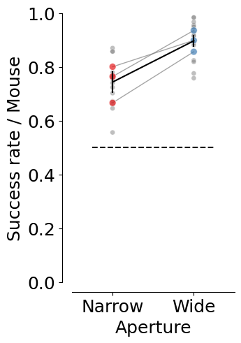
# Occurance of the different conditions
counts = (
trial_df.groupby(["dataset", "mouse_name", "aperture"])
.trial.nunique()
.reset_index(name="trial_count")
)
total_trials = (
trial_df.groupby("dataset").trial.nunique().reset_index(name="total_trials")
)
counts = counts.merge(total_trials, on="dataset")
counts["probability"] = counts["trial_count"] / counts["total_trials"]
counts.sort_values("aperture", inplace=True)
counts["aperture"] = counts.aperture.astype("str")
fig, ax = plt.subplots(1, 1, figsize=(3, 5))
sns.lineplot(
data=counts.groupby(["aperture", "mouse_name"], as_index=False).probability.mean(),
x="aperture",
y="probability",
units="mouse_name",
estimator=None,
ax=ax,
color="grey",
alpha=0.7,
linewidth=1,
zorder=3,
)
sns.scatterplot(
data=counts.groupby(["aperture", "mouse_name"], as_index=False).probability.mean(),
x="aperture",
y="probability",
hue="aperture",
ax=ax,
palette=plotting.colors_aperture,
alpha=0.6,
s=50,
zorder=2,
)
sns.scatterplot(
data=counts,
x="aperture",
y="probability",
hue="aperture",
ax=ax,
palette=["grey"] * counts["dataset"].nunique(),
alpha=0.6,
zorder=1,
s=20,
)
sns.lineplot(
data=counts.groupby(["aperture", "mouse_name"], as_index=False).probability.mean(),
x="aperture",
y="probability",
ax=ax,
color="black",
err_style="bars",
errorbar="se",
alpha=0.8,
zorder=4,
)
ax.hlines(
0.5,
xmin=-0.25,
xmax=len(trial_df.aperture.unique()) - 0.75,
linestyles="dashed",
colors="k",
)
plt.ylim(0, 1)
plt.xlim(-0.5, 1.5)
plt.xticks([0, 1], ["Narrow", "Wide"])
plt.xlabel("Aperture")
plt.ylabel("P(Occurance)")
sns.despine(offset=10)
plt.legend([], [], frameon=False)
plt.savefig(save_fig_path + "supp_contrast_trial_number.svg", transparent=True)
counts = counts.pivot(index="dataset", columns=["aperture"], values=["probability"])
print(
"wide aperture mean: ",
np.mean(np.array(counts["probability"]["12.0"])),
"std: ",
np.std(np.array(counts["probability"]["12.0"])),
)
print(
"narrow aperture mean: ",
np.mean(np.array(counts["probability"]["4.3"])),
"std: ",
np.std(np.array(counts["probability"]["4.3"])),
)
ttest_rel(
np.array(counts["probability"]["12.0"]), np.array(counts["probability"]["4.3"])
)
wide aperture mean: 0.508655783006373 std: 0.02774361461722577
narrow aperture mean: 0.49134421699362696 std: 0.027743614617225784
TtestResult(statistic=1.167366793078196, pvalue=0.262560598358068, df=14)
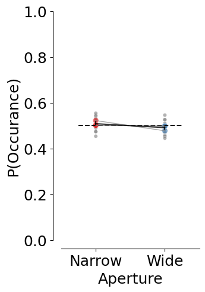
fig, ax = plt.subplots(1, 1, figsize=(5, 2))
plotting.plot_rate(
df=trial_df,
label_x="trial_left_choice",
per_aperture=True,
plot_bias=True,
ax=ax,
cmap=plotting.colors_aperture[0:2],
per_mouse=True,
)
ax.set_ylim(-0.5, 1.5)
ax.set_ylabel("Aperture")
ax.set_yticks([1, 0], ["Wide", "Narrow"])
ax.set_xlim(-1, 1)
plt.legend([], [], frameon=False)
plt.xlabel("Choice bias index")
ax.axvline(x=0, color="black", linestyle="--", linewidth=1, alpha=0.5)
sns.despine(offset=10)
plt.savefig(save_fig_path + "supp_contrast_choice_bias.svg", transparent=True)
4.3: mean=0.135 ± 0.085
12.0-4.3: TtestResult(statistic=-0.17219823726971856, pvalue=0.8657461439506684, df=14)
12.0: mean=0.116 ± 0.041
12.0 vs chance 0: t=1.74, p=0.223
4.3 vs chance 0: t=0.76, p=0.526
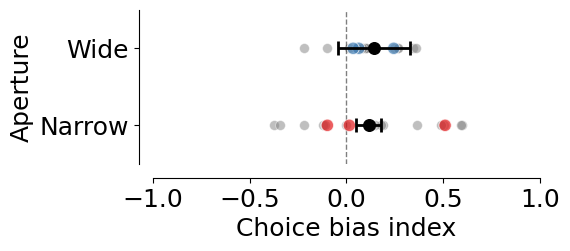
# Stickiness of the decision
trial_df["trial_history"] = trial_df.groupby(
["dataset"]
)["trial_left_choice"].transform(lambda x: x.shift(1)).fillna(0)
trial_df["decision_stickiness"] = (
(trial_df['trial_left_choice'] == trial_df['trial_history'])
.groupby([trial_df['dataset'], trial_df['trial']])
.transform('mean')
)
fig, ax = plt.subplots(1, 1, figsize=(5, 2))
plotting.plot_rate(
df=trial_df,
label_x="decision_stickiness",
per_aperture=True,
ax=ax,
cmap=plotting.colors_aperture[0:2],
per_mouse=True,
plot_bias=True,
)
ax.set_ylim(-0.5, 1.5)
ax.set_yticks([0, 1], ["Narrow", "Wide"])
ax.set_ylabel("Aperture")
ax.set_xlim(-1, 1)
plt.legend([], [], frameon=False)
plt.xlabel("Decision Stickiness")
ax.axvline(x=0, color="black", linestyle="--", linewidth=1, alpha=0.5)
sns.despine(offset=10)
plt.savefig(save_fig_path + "supp_contrast_decision_stickiness.svg", transparent=True)
4.3: mean=0.009 ± 0.033
12.0-4.3: TtestResult(statistic=0.03758014588624681, pvalue=0.9705530506869855, df=14)
12.0: mean=0.010 ± 0.022
12.0 vs chance 0: t=0.32, p=0.782
4.3 vs chance 0: t=0.15, p=0.893
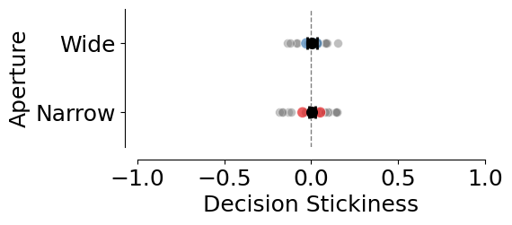
fig, ax = plt.subplots(1, 1, figsize=(2, 5))
counts = (
trial_df
.groupby(["mouse_name", "dataset"], as_index=False)
.trial_jshaped.mean()
)
counts["count"] = counts["trial_jshaped"]
counts = pd.DataFrame(counts.reset_index())
plotting._plot_bar_counts(
counts=counts,
label_x=None,
alpha=0.2,
ax=ax,
per_mouse=True,
cmap=["grey"],
)
ax.set_ylabel("J-shaped trials rate / Mouse")
ax.set_xlabel("Mice")
plt.legend([], [], frameon=False)
sns.despine(offset=10)
print(f"Overall mean: ", np.mean(counts['trial_jshaped']), stats.sem(counts['trial_jshaped']))
plt.savefig(save_fig_path + "supp_contrast_trial_jshaped.svg", transparent=True)
Overall mean: 0.95128327247454 0.008728677583401985
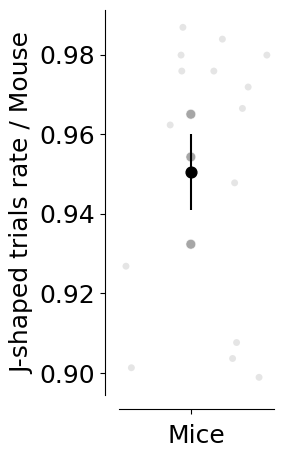
Trajectory analysis#
xy_df = []
for m in mouse_list:
print(m)
xy_df.append(pd.DataFrame((MeanXYTrajectory() & f'dataset="{m}"').fetch(as_dict=True)[0]))
xy_df = pd.concat(xy_df)
xy_df["mouse_name"] = xy_df.dataset.str.split("_").str [0]
Flamingo_2026-02-02_1
Flamingo_2026-02-03_1
Flamingo_2026-02-04_1
Flamingo_2026-02-05_1
Flamingo_2026-02-06_1
Flamingo_2026-02-09_1
Grizzly_2026-02-03_1
Grizzly_2026-02-04_1
Grizzly_2026-02-05_1
Grizzly_2026-02-09_1
Grizzly_2026-02-11_1
Hamster_2026-02-03_1
Hamster_2026-02-04_1
Hamster_2026-02-06_1
Hamster_2026-02-09_1
# Mean and error by session
mean_session = analysis.mean_xy_trajectory(xy_df,
index_columns=[
"dataset", "mouse_name", "aperture", "trial_left_choice", "trial_length"
])
# Mean and error by aperture and choice
mean_group = analysis.mean_xy_trajectory(mean_session,
index_columns=[
"aperture", "trial_left_choice", "trial_length"
])
# Plot the mean trajectories
plotting.plot_mean_xy_trajectory(mean_group, cmap=plotting.colors_choice[::-1], color_by="choice", style_by="aperture")
plt.savefig(save_fig_path + "figure_2_mean_xy_trajectories.svg", transparent=True)
plt.savefig(save_fig_path + "figure_2_mean_xy_trajectories.png", transparent=True, dpi=300)
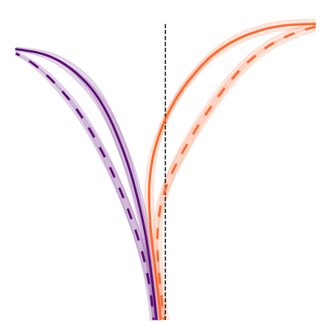
# Mean and error by mouse
mean_mouse = analysis.mean_xy_trajectory(xy_df,
index_columns= [
"mouse_name", "aperture", "trial_left_choice", "trial_length"
])
for m in mean_mouse.mouse_name.unique():
plotting.plot_mean_xy_trajectory(mean_mouse[mean_mouse.mouse_name == m],
cmap=plotting.colors_choice[::-1], color_by="choice", style_by="aperture")
plt.title(m)
plt.savefig(save_fig_path + f"supp_contrast_dual_occluders_trajectories_time_{m}.svg", transparent=True)
plt.savefig(save_fig_path + f"supp_contrast_dual_occluders_trajectories_time_{m}.png", transparent=True, dpi=300)
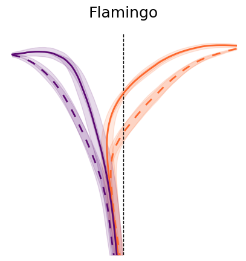
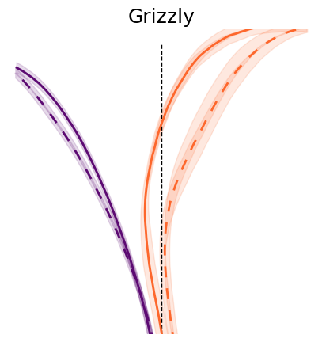
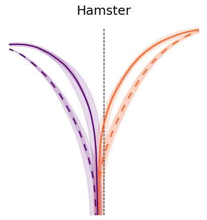
y_binned_df = []
for m in mouse_list:
try:
y_binned_df.append(pd.DataFrame((InterpolatedTrials() & f'dataset="{m}"').fetch("dataset", "aperture", "trial", "x", "y", "flip_one_side", "trial_left_choice", as_dict=True)[0]))
except Exception as err:
print(err)
y_binned_df = pd.concat(y_binned_df)
y_binned_df["mouse_name"] = y_binned_df.dataset.str.split("_").str [0]
y_binned_df["x_flipped"] = y_binned_df.x * y_binned_df.flip_one_side
data = utils.create_bins(y_binned_df,
spatial_ybins=[-13, 24, 30])
y_binned_df_mean = analysis.mean_xy_trajectory(data,
index_columns=["dataset", "mouse_name", "aperture", "bin_centers"],
values=["x_flipped", "y"])
stats_binned = y_binned_df_mean[(y_binned_df_mean.bin_centers >= 0) & (y_binned_df_mean.bin_centers < 19)]
sns.lineplot(data=stats_binned, x="bin_centers", y="x_flipped", hue="aperture",
palette= plotting.colors_aperture, errorbar="se")
plt.xlabel("Y position")
plt.ylabel("X position")
sns.despine(offset=10)
plt.savefig(save_fig_path + "supp_contrast_mean_xy_trajectory.svg", transparent=True)
print(
AnovaRM(
data=stats_binned,
depvar="x_flipped",
subject="dataset",
within=["aperture", "bin_centers"],
).fit()
)
Anova
=====================================================
F Value Num DF Den DF Pr > F
-----------------------------------------------------
aperture 11.9600 1.0000 14.0000 0.0038
bin_centers 221.9727 14.0000 196.0000 0.0000
aperture:bin_centers 5.7969 14.0000 196.0000 0.0000
=====================================================
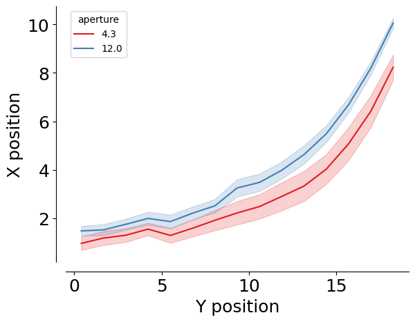
p_values = []
for i in stats_binned.bin_centers.unique():
section = stats_binned [stats_binned.bin_centers == i]
t = ttest_rel(
section[section.aperture == section.aperture.unique()[0]].x_flipped,
section[section.aperture == section.aperture.unique()[1]].x_flipped,
)
p_values.append(pd.DataFrame({"segment": i, "p_value": t.pvalue}, index=[0]))
p_value_df = pd.concat(p_values)
p_value_df["p_value_corr"] = stats.false_discovery_control(p_value_df.p_value)
# Closest value to 0.05 in the corrected p-values
cross_sign = p_value_df[p_value_df.p_value_corr <= 0.05].iloc[0]
fig = plt.figure(figsize=(3, 5))
sns.lineplot(data=p_value_df, x="segment", y="p_value_corr", c="black")
plt.axhline(0.05, linestyle="dashed", color="red", alpha=0.5)
plt.xlabel("Y bins")
plt.ylabel("FDR p-value")
plt.yscale("log")
plt.axvline(x=cross_sign.segment, linestyle="dashed", color="blue", alpha=0.5)
# add the value of the y position at the crossing point
plt.text(cross_sign.segment - 0.5, cross_sign.p_value_corr, f"{cross_sign.segment:.2f}",
color="blue", fontsize=12, verticalalignment="bottom", horizontalalignment="right", alpha=0.7)
plt.scatter(data=cross_sign, x="segment", y="p_value_corr", color="blue", alpha=0.7)
sns.despine(offset=10)
plt.savefig(save_fig_path + "supp_contrast_position_p_values.svg", transparent=True)
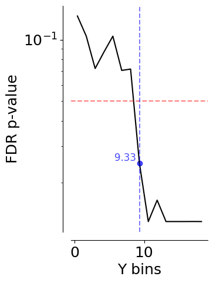
Velocity analysis#
velocity_df = []
for m in mouse_list:
print(m)
velocity_df.append(pd.DataFrame((MeanVelocities() & f'dataset="{m}"').fetch(as_dict=True)[0]))
velocity_df = pd.concat(velocity_df)
Flamingo_2026-02-02_1
Flamingo_2026-02-03_1
Flamingo_2026-02-04_1
Flamingo_2026-02-05_1
Flamingo_2026-02-06_1
Flamingo_2026-02-09_1
Grizzly_2026-02-03_1
Grizzly_2026-02-04_1
Grizzly_2026-02-05_1
Grizzly_2026-02-09_1
Grizzly_2026-02-11_1
Hamster_2026-02-03_1
Hamster_2026-02-04_1
Hamster_2026-02-06_1
Hamster_2026-02-09_1
fig, ax = plt.subplots(1, 1, figsize=(6, 5))
ax = ax
sns.lineplot(
data=velocity_df,
x="trial_length",
y="velocity",
palette=(
plotting.colors_aperture[:2]
if len(mean_mouse.aperture.unique()) == 2
else plotting.colors_aperture[:2]
),
hue="aperture",
errorbar="se",
ax=ax,
)
ax.set_title(f"Velocity")
sns.despine(offset=10)
ax.set_xlabel("Trial progression")
ax.set_ylabel("Combined velocity (cm/s)")
plt.tight_layout(pad=2)
plt.savefig(save_fig_path + "supp_contrast_mean_velocity.svg", transparent=True)
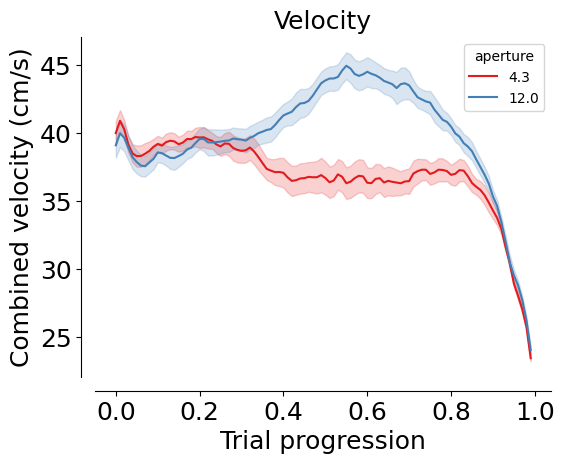
print(
AnovaRM(
data=velocity_df,
depvar="velocity",
subject="dataset",
within=["aperture", "trial_length"],
).fit()
)
Anova
======================================================
F Value Num DF Den DF Pr > F
------------------------------------------------------
aperture 63.0720 1.0000 14.0000 0.0000
trial_length 46.3908 99.0000 1386.0000 0.0000
aperture:trial_length 22.2189 99.0000 1386.0000 0.0000
======================================================
p_values = []
for i in velocity_df.trial_length.unique():
section = velocity_df[velocity_df.trial_length == i]
t = ttest_ind(
section[section.aperture == section.aperture.unique()[0]].velocity,
section[section.aperture == section.aperture.unique()[1]].velocity,
)
p_values.append(pd.DataFrame({"segment": i, "p_value": t.pvalue}, index=[0]))
p_value_df = pd.concat(p_values)
p_value_df["p_value_corr"] = stats.false_discovery_control(p_value_df.p_value)
plt.plot(p_value_df.segment, p_value_df.p_value_corr, c="k")
plt.hlines(0.05, xmin=0, xmax=1, color="red", linestyle="dashed")
plt.xlabel("Trial progression")
plt.ylabel("FDR p-value")
plt.yscale("log")
sns.despine(offset=10)
plt.savefig(save_fig_path + "supp_contrast_velocity_pvalue.svg", transparent=True)
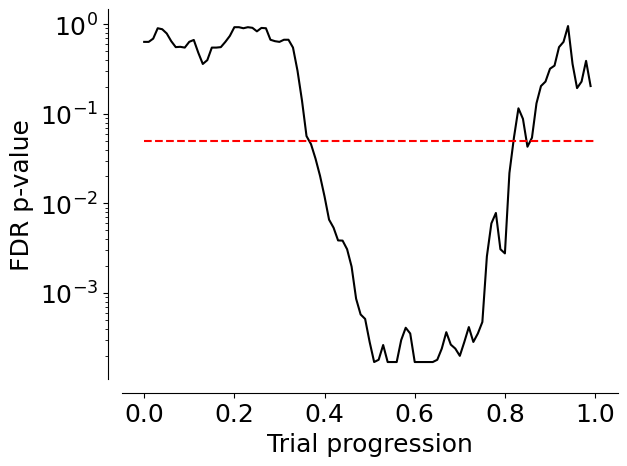
Optimal p#
# TODO This fecth call is a little slow, maybe we should add an optimal p table
optimal_df = []
for m in mouse_list:
print(m)
optimal_df.append(pd.DataFrame((InterpolatedTrials() & f'dataset="{m}"').fetch("dataset", "trial", "aperture", "optimal_p", as_dict=True)[0]))
optimal_df = pd.concat(optimal_df)
# Create list of included datasets
mouse_list = optimal_df.dataset.unique()
optimal_df["mouse_name"] = optimal_df.dataset.str.split("_").str [0]
optimal_df = optimal_df.groupby(["dataset", "mouse_name", "trial", "aperture"], as_index=False).mean()
optimal_df = optimal_df.groupby(["dataset", "mouse_name", "aperture"], as_index=False).mean()
Flamingo_2026-02-02_1
Flamingo_2026-02-03_1
Flamingo_2026-02-04_1
Flamingo_2026-02-05_1
Flamingo_2026-02-06_1
Flamingo_2026-02-09_1
Grizzly_2026-02-03_1
Grizzly_2026-02-04_1
Grizzly_2026-02-05_1
Grizzly_2026-02-09_1
Grizzly_2026-02-11_1
Hamster_2026-02-03_1
Hamster_2026-02-04_1
Hamster_2026-02-06_1
Hamster_2026-02-09_1
optimal_df["lab_id"] = 0
for dataset_name in mouse_list:
# Fetch lab_id for each dataset
optimal_df.loc[optimal_df.dataset==dataset_name, "lab_id"] = ((vr4mice.Collab() & f'dataset = "{dataset_name}"') * vr4mice.Labs()).fetch("lab")[0]
fig, ax = plt.subplots(1, 1, figsize=(3, 5))
counts = (
optimal_df
.groupby(["mouse_name", "dataset", "aperture"], as_index=False)
.optimal_p.mean()
)
counts["count"] = counts["optimal_p"]
counts = pd.DataFrame(counts.reset_index())
counts.aperture = counts.aperture.round(2).astype(str)
plotting._plot_bar_counts(
counts=counts,
label_x="aperture",
alpha=0.2,
ax=ax,
per_mouse=True,
cmap=plotting.colors_aperture[0:2],
)
ax.invert_xaxis()
ax.set_ylabel("Optimal p")
ax.set_xlim(-0.5, 1.5)
ax.set_xticks([0, 1], ["Narrow", "Wide"])
ax.set_xlabel("Aperture")
plt.legend([], [], frameon=False)
sns.despine(offset=10)
for i in counts.aperture.unique():
for j in counts.aperture.unique():
if i < j:
stat = stats.ttest_rel(
counts[counts["aperture"] == i]["optimal_p"],
counts[counts["aperture"] == j]["optimal_p"],
)
print(f"{i}-{j}: {stat}")
print(f"mean {i}: {np.mean(counts[counts['aperture'] == i]['optimal_p'])}")
print(f"sem {i}: {stats.sem(counts[counts['aperture'] == i]['optimal_p'])}")
plt.savefig(save_fig_path + "supp_contrast_fitted_p.svg", transparent=True)
mean 4.3: 14.73409324511116
sem 4.3: 1.1211647591569753
12.0-4.3: TtestResult(statistic=-2.741191996403561, pvalue=0.015917849074639428, df=14)
mean 12.0: 13.210398985341383
sem 12.0: 0.9594091335646505
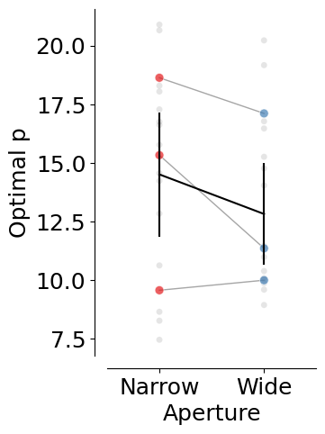
counts.groupby("aperture").optimal_p.mean(), counts.groupby("aperture").optimal_p.sem()
(aperture
12.0 13.210399
4.3 14.734093
Name: optimal_p, dtype: float64,
aperture
12.0 0.959409
4.3 1.121165
Name: optimal_p, dtype: float64)
Regression model#
# This takes a while to fetch because we need to fetch data for all trials
dataset_list = []
for d in mouse_list:
print(d)
try:
dataset_list.append(pd.DataFrame((InterpolatedTrials() & f'dataset = "{d}"').fetch(as_dict=True)[0]))
except Exception as err:
print(err, " dataset missing")
interpolated_df = pd.concat(dataset_list)
interpolated_df["mouse_name"] = interpolated_df.dataset.str.split("_").str[0]
Flamingo_2026-02-02_1
Flamingo_2026-02-03_1
Flamingo_2026-02-04_1
Flamingo_2026-02-05_1
Flamingo_2026-02-06_1
Flamingo_2026-02-09_1
Grizzly_2026-02-03_1
Grizzly_2026-02-04_1
Grizzly_2026-02-05_1
Grizzly_2026-02-09_1
Grizzly_2026-02-11_1
Hamster_2026-02-03_1
Hamster_2026-02-04_1
Hamster_2026-02-06_1
Hamster_2026-02-09_1
mean_mouse = interpolated_df.groupby(
["dataset", "aperture", "trial_left_choice", "trial_length"], as_index=False
).mean(numeric_only=True)
fig, ax = plt.subplots(2, 2, figsize=(12, 8))
ax = ax.flatten()
dash_styles = {
mean_mouse.aperture.unique()[0]: "", # Solid
mean_mouse.aperture.unique()[1]: (5, 5) # Dashed
}
for (i, label), label_str in zip(enumerate(
["heading_dir_cos", "heading_dir_sin", "head_angle_cos", "head_angle_sin"]
), ["cos(Running Direction)", "sin(Running Direction)", "cos(Head-Body Angle)", "sin(Head-Body Angle)"]):
sns.lineplot(
data=mean_mouse,
x="trial_length",
y=label,
palette=plotting.colors_choice[::-1]
if len(mean_mouse.aperture.unique()) == 2
else "viridis",
hue="trial_left_choice"
if len(mean_mouse.aperture.unique()) == 2
else "aperture",
style=(
"aperture"
if len(mean_mouse.aperture.unique()) == 2
else "trial_left_choice"
),
dashes=dash_styles,
errorbar="se",
ax=ax[i],
)
ax[i].set_ylabel(label_str)
ax[i].set_xlabel("Trial progression")
sns.despine(ax=ax[i], offset=10)
plt.tight_layout(pad=2)
plt.savefig(save_fig_path + "supp_contrast_heading_dir_head_angle_cos_sin.svg", bbox_inches="tight", transparent=True)
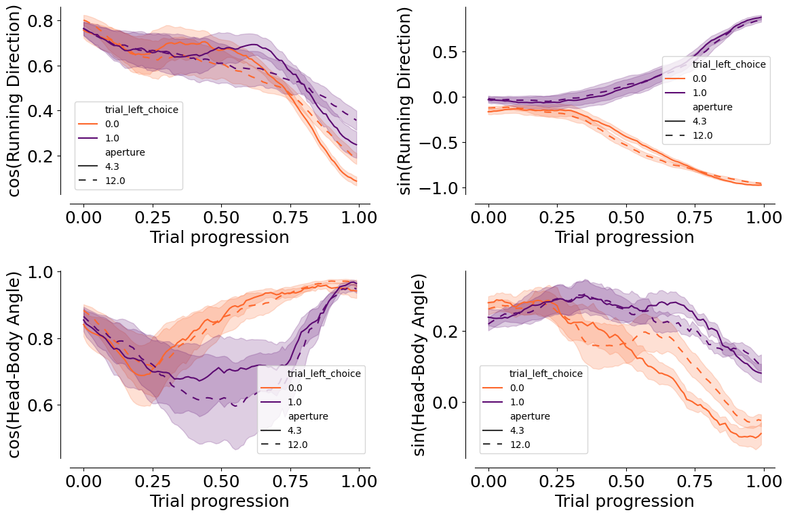
task_type_key = {"set_name": "contrast_black_target",
"stage_name": "dual_occlusion"}
model_key = {"label_set_id": 8, "params_id": 1}
# Coefficients for dual occluder task
coef = (PredictionModel() & model_key & task_type_key).fetch1("coefficients")
# Logits of the regression
model_labels, clean_labels = (LabelSet.Member * Label & model_key).fetch("label_key", "clean_name")
fig, ax = plt.subplots(1, 1, figsize=(2, 5))
ax.barh(
model_labels,
np.mean(coef[:, 1:], axis=0),
yerr=stats.sem(coef[:, 1:], axis=0),
color="#7C7C7C",
)
sns.despine(offset=10, ax=ax)
ax.set_yticks(np.arange(len(model_labels)))
ax.set_yticklabels(clean_labels, rotation=0, ha="right", fontsize=15)
ax.set_xlabel("Logits")
ax.set_ylabel("Features")
plt.savefig(save_fig_path + "supp_contrast_model_logits.svg", transparent=False)
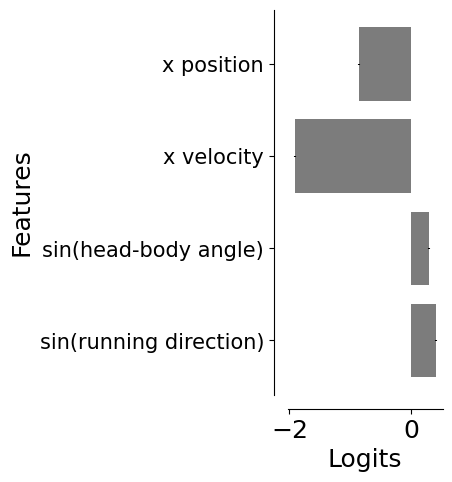
prediction_df = pd.DataFrame((PredictionModel().SessionPrediction() & model_key & task_type_key).fetch(
"dataset", "trial", "proba_left", "accuracy", "trial_length", as_dict=True)).explode(["trial", "proba_left", "accuracy", "trial_length"])
df_model = prediction_df.merge(
interpolated_df[["dataset", "trial_length", "trial", "aperture", "trial_left_choice", "x", "y"]], on=["dataset", "trial", "trial_length"]
)
df_model["accuracy"] = df_model["accuracy"].astype(float)
df_model["proba_left"] = df_model["proba_left"].astype(float)
fig, ax = plt.subplots(1, 1, figsize=(5, 5))
group = df_model[(df_model.dataset == "Flamingo_2026-02-09_1")]
trials = [
94,
15,
66,
170,
224,
195,
56,
203,
88,
239,
113,
91,
186,
248,
109,
164,
188,
60,
229,
182,
156,
197,
52,
45,
]
group = group[group.trial.isin(np.array(trials))]
sns.lineplot(
data=group,
x="trial_length",
y="proba_left",
hue="trial_left_choice",
errorbar=None,
estimator=None,
units="trial",
palette=plotting.colors_choice[::-1],
sort=False,
alpha=0.5,
ax=ax,
)
ax.set_ylabel("Prob(Left)")
ax.set_xlabel("Trial progression")
ax.legend([], [], frameon=False)
sns.despine(offset=10)
plt.savefig(
save_fig_path + "supp_contrast_dynamic_decision_variable.svg",
transparent=True,
)
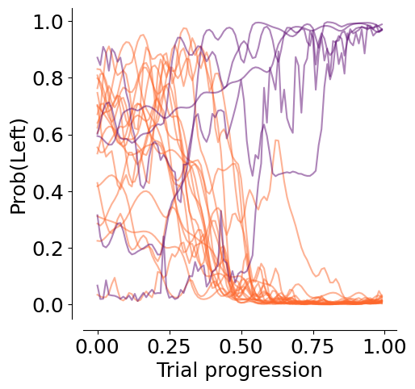
df_model_mean = df_model.groupby(["dataset", "aperture", "trial_left_choice", "trial_length"], as_index=False).mean()
fig, ax = plt.subplots(1, 1, figsize=(5, 5))
dash_styles = {
mean_mouse.aperture.unique()[0]: "", # Solid
mean_mouse.aperture.unique()[1]: (10, 10) # Dashed
}
sns.lineplot(
data=df_model_mean,
x="trial_length",
y="proba_left",
hue="trial_left_choice",
style="aperture",
palette=plotting.colors_choice[::-1],
sort=False,
alpha=1,
ax=ax,
errorbar="se",
dashes=dash_styles
)
ax.set_ylabel("Proba(Left)")
ax.set_xlabel("Trial progression")
ax.hlines(0.5, xmin=0, xmax=1, colors="black", linestyles="dashed")
ax.hlines(0.7, xmin=0, xmax=1, colors="gray", linestyles="dotted")
ax.hlines(0.3, xmin=0, xmax=1, colors="gray", linestyles="dotted")
ax.legend([], [], frameon=False)
sns.despine(offset=10)
plt.savefig(
save_fig_path + "supp_contrast_dynamic_decision_variable_avg.png",
transparent=True,
dpi=300,
)
plt.savefig(
save_fig_path + "supp_contrast_dynamic_decision_variable_avg.svg",
transparent=True,
)
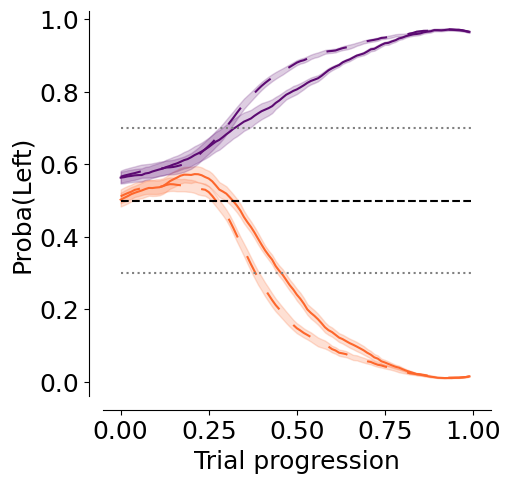
df_model_mean = df_model.groupby(["dataset", "aperture", "trial_length"], as_index=False).mean()
fig, ax = plt.subplots(1, 1, figsize=(4, 5))
sns.lineplot(
data=df_model_mean,
x="trial_length",
y="accuracy",
hue="aperture",
palette=plotting.colors_aperture,
sort=False,
alpha=1,
ax=ax,
errorbar="se"
)
ax.hlines(0.5, 0, 1, color="black", linestyle="--")
ax.set_ylabel("Accuracy")
ax.set_xlabel("Trial progression")
ax.legend([], [], frameon=False)
sns.despine(offset=10)
plt.savefig(
save_fig_path + "supp_contrast_model_accuracy.svg", transparent=True
)
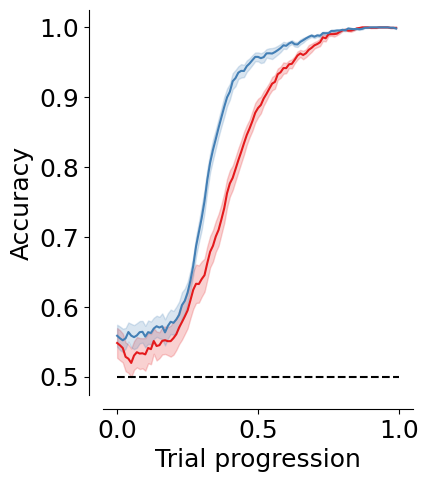
decision_points = pd.DataFrame((DecisionPoints() & task_type_key & model_key & "threshold_uncertainty = 0.2").fetch(as_dict=True))
decision_points = decision_points.explode(["trial", "aperture", "trial_length", "trial_left_choice", "proba_left", "x", "y", "trial_rewarded"])
decision_points["mouse_name"] = decision_points.dataset.str.split("_").str[0]
with open("information_maps/data/info_matrix_unnormalized_12.3w.npy", "rb") as file:
info_matrix_narrow = np.rot90(np.load(file), k=1)
with open("information_maps/data/info_matrix_unnormalized_34.6w.npy", "rb") as file:
info_matrix_wide = np.rot90(np.load(file), k=1)
info_matrices = [info_matrix_narrow, info_matrix_wide]
# normalize info matrices to max 1
info_matrices = [im / im.max() for im in info_matrices]
fig, ax = plt.subplots(
1, len(df_model.aperture.unique()), figsize=(9, 5), constrained_layout=True
)
decision_color = "deeppink"
session_to_plot = "Flamingo_2026-02-09_1"
trials = [44, 45, 19, 62, 61, 45, 85, 41, 43, 41, 50, 75, 24, 69, 84, 74, 10] + [
63,
30,
78,
47,
33,
5,
17,
9,
47,
30,
99,
11,
12,
15,
]
# Start from PuOr
base_cmap = cm.get_cmap("PuOr")
# Make a brighter version by rescaling luminance
def brighten(cmap, factor=2):
colors = cmap(np.linspace(0, 1, 256))
rgb = mcolors.rgb_to_hsv(colors[:, :3])
rgb[:, 2] = rgb[:, 2] * factor # brighten value channel
rgb[:, 2] = np.clip(rgb[:, 2], 0, 1)
colors[:, :3] = mcolors.hsv_to_rgb(rgb)
return mcolors.ListedColormap(colors)
bright_puor = brighten(base_cmap)
for i, aperture in enumerate(df_model.aperture.unique()[::-1]):
regression.plot_decision_points_on_trajectory(
df_model[
(df_model.dataset == session_to_plot) & (df_model.aperture == aperture)
],
box_df,
decision_point=decision_points[
(decision_points.dataset == session_to_plot)
& (decision_points.aperture == aperture)
],
color=decision_color,
trials=trials,
ax=ax[i],
cmap=bright_puor,
)
xlim = ax[i].get_xlim()
ylim = ax[i].get_ylim()
im = ax[i].imshow(info_matrices[i],
cmap="bone",
extent=[-27, 27, -27, 27],
zorder=-10)
ax[i].set_xlim(xlim)
ax[i].set_ylim(ylim)
ax[i].set_aspect(1.4)
ax[i].set_xlabel("x position (cm)")
ax[i].set_ylabel("y position (cm)")
sns.despine(offset=10, ax=ax[i])
#fig.colorbar(im, ax=ax, orientation="vertical", fraction=0.03, pad=0.04, label="Information content rate")
plt.savefig(
save_fig_path + "supp_contrast_decision_points_trajectories_bright.svg",
transparent=True,
)
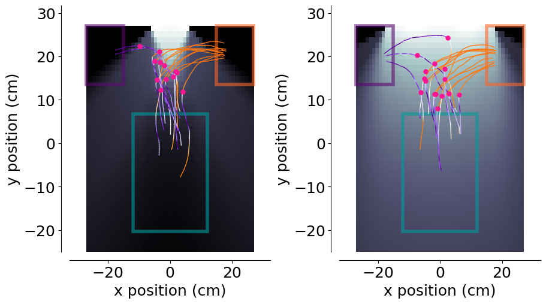
decision_points["y"] = decision_points.y.astype(float)
fig, ax = plt.subplots(1, 1, figsize=(3, 5))
stats_res = plotting.pairplot_average_decision_point(
decision_points,
label_parameter="y",
ax=ax,
cmap=plotting.colors_aperture,
per_mouse=True,
)
ax.set_xlim(-0.5, 1.5)
ax.set_ylim(0, 30)
ax.set_xlabel("Aperture")
ax.set_xticks([0, 1], ["Narrow", "Wide"])
ax.set_ylabel("Distance to screen (cm)")
sns.despine(offset=10)
plt.legend([], [], frameon=False)
plt.savefig(
save_fig_path + "supp_contrast_decision_points_distance.svg",
transparent=True,
)
mean: 13.86564617811223 +/- 0.5386939023469558
12.0-4.3: TtestResult(statistic=-4.592982876939882, pvalue=0.00041800924735993993, df=14)
mean difference: 3.6491137828863707
mean: 10.21653239522586 +/- 0.4492331557704968
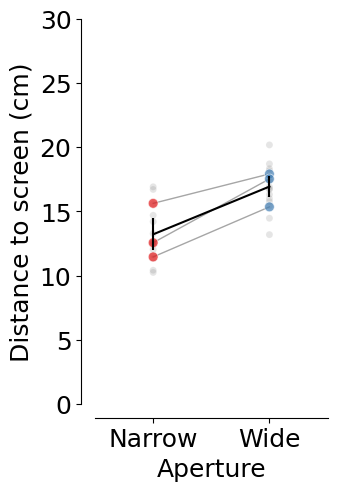
Direct comparison#
trial_df_white = (TrialMetrics() * vr4mice.Groups() * vr4mice.Labels() * (vr4mice.Dataset() & 'session_label = "ar_discrim_occluders"')).fetch(as_dict=True)
trial_df_white = pd.concat([pd.DataFrame(x) for x in trial_df_white])
# Exclude sessions that were not in the list
trial_df_white, reward_table = utils.apply_inclusion_criteria(trial_df_white,
return_excluded=False)
# Create list of included datasets
mouse_list_white = trial_df_white.dataset.unique()
trial_df_white["mouse_name"] = trial_df_white.dataset.str.split("_").str[0]
y_binned_df_white = []
for m in mouse_list_white:
try:
y_binned_df_white.append(pd.DataFrame((InterpolatedTrials() & f'dataset="{m}"').fetch("dataset", "aperture", "trial", "x", "y", "flip_one_side", "trial_left_choice", as_dict=True)[0]))
except Exception as err:
print(err)
y_binned_df_white = pd.concat(y_binned_df_white)
y_binned_df_white["mouse_name"] = y_binned_df_white.dataset.str.split("_").str [0]
y_binned_df_white["x_flipped"] = y_binned_df_white.x * y_binned_df_white.flip_one_side
y_binned_df_white_mean = analysis.mean_xy_trajectory(utils.create_bins(y_binned_df_white,
spatial_ybins=[-13, 24, 30]), index_columns= ["dataset", "mouse_name", "aperture", "bin_centers"], values=["x_flipped", "y"])
stats_binned_white = y_binned_df_white_mean[(y_binned_df_white_mean.bin_centers >= 0) & (y_binned_df_white_mean.bin_centers <= 18)]
stats_binned = y_binned_df_mean[(y_binned_df_mean.bin_centers >= 0) & (y_binned_df_mean.bin_centers <= 18)]
fig, ax = plt.subplots(1, 2, figsize=(15, 5))
sns.lineplot(data = stats_binned_white, x="bin_centers", y="x_flipped", hue="aperture",
palette= plotting.colors_aperture, errorbar="se", ax=ax[0])
ax[0].set_xlabel("Y position")
ax[0].set_ylabel("X position")
sns.lineplot(data = stats_binned, x="bin_centers", y="x_flipped", hue="aperture",
palette= plotting.colors_aperture, errorbar="se", ax=ax[1])
ax[1].set_xlabel("Y position")
ax[1].set_ylabel("X position")
sns.despine(offset=10)
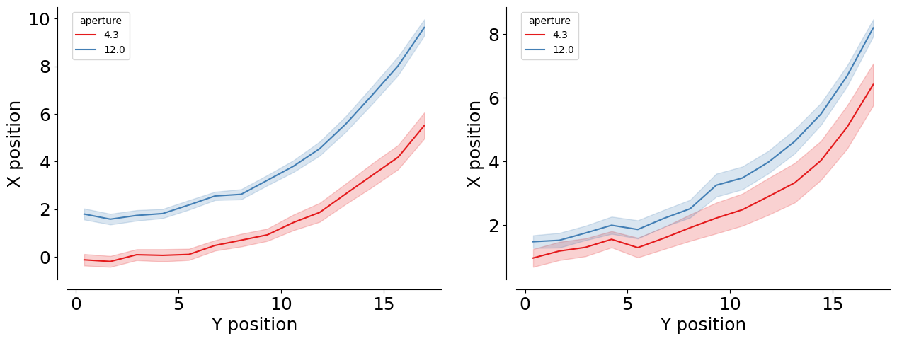
p_values_white = []
for i in stats_binned_white.bin_centers.unique():
section = stats_binned_white[stats_binned_white.bin_centers == i]
t = ttest_rel(
section[section.aperture == section.aperture.unique()[0]].x_flipped,
section[section.aperture == section.aperture.unique()[1]].x_flipped,
)
p_values_white.append(pd.DataFrame({"segment": i, "p_value": t.pvalue}, index=[0]))
p_value_df_white = pd.concat(p_values_white)
p_value_df_white["p_value_corr"] = stats.false_discovery_control(p_value_df_white.p_value)
# Assign labels
stats_binned_white['source'] = 1
stats_binned['source'] = 0
# Vertical append
df_combined = pd.concat([stats_binned_white, stats_binned], ignore_index=True)
def calculate_cohen_d(group0, group1):
"""Calculates Cohen's d for two independent samples."""
n0, n1 = len(group0), len(group1)
# Degrees of freedom
dof = n0 + n1 - 2
# Pooled Standard Deviation
# Using ddof=1 for unbiased variance estimate
var0 = np.var(group0, ddof=1)
var1 = np.var(group1, ddof=1)
pooled_std = np.sqrt(((n0 - 1) * var0 + (n1 - 1) * var1) / dof)
# Calculate d (difference of means over pooled std)
if pooled_std == 0:
return 0
return (np.mean(group0) - np.mean(group1)) / pooled_std
comp_rows = []
for (ap, b), g in df_combined.groupby(["aperture", "bin_centers"]):
vals_0 = g[g["source"] == 0]["x_flipped"].dropna()
vals_1 = g[g["source"] == 1]["x_flipped"].dropna()
# Increased minimum N to 3 for slightly better stability
if len(vals_0) < 3 or len(vals_1) < 3:
continue
# Welch's t-test (handles unequal variance and unequal n)
t_res = stats.ttest_ind(vals_0, vals_1, equal_var=False)
# Cohen's d for effect size
d_val = calculate_cohen_d(vals_0, vals_1)
comp_rows.append(
{
"aperture": ap,
"bin_centers": b,
"n_source0": len(vals_0),
"n_source1": len(vals_1),
"t_stat": t_res.statistic,
"p_value": t_res.pvalue,
"cohen_d": d_val
}
)
per_bin_results = pd.DataFrame(comp_rows).sort_values(["aperture", "bin_centers"])
if not per_bin_results.empty:
# FDR correction within each aperture
per_bin_results["p_value_corr"] = (
per_bin_results.groupby("aperture")["p_value"]
.transform(lambda s: stats.false_discovery_control(s))
)
per_bin_results["significant"] = per_bin_results["p_value_corr"] < 0.05
# Plot the p-values across bins for each aperture
apertures_sorted = sorted(per_bin_results["aperture"].unique())
colors = plotting.colors_aperture[:len(apertures_sorted)]
fig, ax = plt.subplots(1, 1, figsize=(8, 4))
for ap, color in zip(apertures_sorted, colors):
sub = per_bin_results[per_bin_results["aperture"] == ap]
ax.plot(sub["bin_centers"],
sub["p_value_corr"],
color=color,
linewidth=1.5,
label=f"Aperture {ap}",
alpha=0.4,
zorder=1
)
ax.scatter(
sub["bin_centers"],
sub["p_value_corr"],
color=color,
s=sub["cohen_d"].abs() * 80,
alpha=0.7,
edgecolor="white",
linewidths=0.5,
zorder=2
)
# Significance threshold
ax.axhline(0.05, linestyle="--", color="grey", alpha=0.5)
# Formatting
ax.set_ylabel("FDR p-value")
ax.set_xlabel("Y bins")
ax.set_yscale('log')
sns.despine(ax=ax, offset=10)
plt.savefig(save_fig_path + "supp_contrast_position_p_values_with_effect_size.svg", transparent=True)
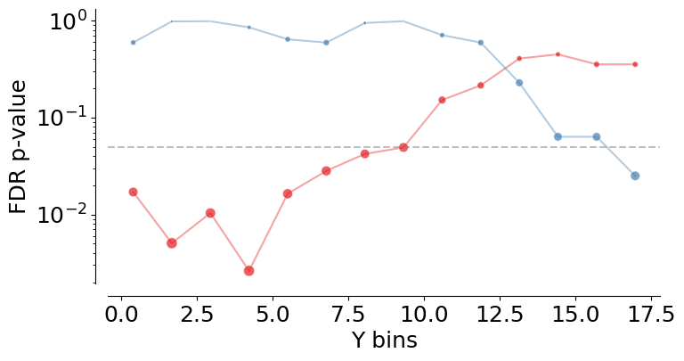
Multi-session analysis#
trial_df = ((vr4mice.Dataset() & 'session_label = "ar_discrim_5_occluders_inv"') * TrialMetrics()).fetch(as_dict=True)
trial_df = pd.concat([pd.DataFrame(x) for x in trial_df])
trial_df ["aperture"] = trial_df.aperture.round(2)
trial_df, reward_table = utils.apply_inclusion_criteria(trial_df[["dataset", "aperture", "trial", "trial_left_choice", "trial_rewarded", "trial_tortuosity", "trial_duration"]],
return_excluded=False)
# Create list of included datasets
sessions_list = trial_df.dataset.unique()
trial_df["mouse_name"] = trial_df.dataset.str.split("_").str [0]
trial_df.mouse_name.nunique(), trial_df.dataset.nunique()
(3, 10)
trial_df.groupby("mouse_name").nunique().dataset
mouse_name
Flamingo 4
Grizzly 3
Hamster 3
Name: dataset, dtype: int64
trial_df.dataset.unique()
array(['Flamingo_2026-02-12_1', 'Flamingo_2026-02-16_1',
'Flamingo_2026-02-17_1', 'Flamingo_2026-02-18_1',
'Grizzly_2026-02-13_1', 'Grizzly_2026-02-17_1',
'Grizzly_2026-02-19_1', 'Hamster_2026-02-11_1',
'Hamster_2026-02-17_1', 'Hamster_2026-02-18_1'], dtype=object)
trial_df["lab_id"] = 0
for dataset_name in sessions_list:
# Fetch lab_id for each dataset
trial_df.loc[trial_df.dataset==dataset_name, "lab_id"] = ((vr4mice.Collab() & f'dataset = "{dataset_name}"') * vr4mice.Labs()).fetch("lab")[0]
# Occurance of the different conditions
counts = (
trial_df.groupby(["dataset", "mouse_name", "aperture"])
.trial.nunique()
.reset_index(name="trial_count")
)
total_trials = (
trial_df.groupby("dataset").trial.nunique().reset_index(name="total_trials")
)
counts = counts.merge(total_trials, on="dataset")
counts["probability"] = counts["trial_count"] / counts["total_trials"]
counts["aperture"] = counts["aperture"].astype("float")
counts = counts.sort_values("aperture")
counts["aperture_numeric"] = counts["aperture"]
aperture_order = counts["aperture"].unique()
counts["aperture"] = pd.Categorical(counts["aperture"].astype("str"), categories=aperture_order.astype("str"), ordered=True)
fig, ax = plt.subplots(1, 2, figsize=(10, 5))
sns.lineplot(
data=counts.groupby(["aperture", "mouse_name"], as_index=False).probability.mean(),
x="aperture",
y="probability",
units="mouse_name",
estimator=None,
color="grey",
alpha=0.7,
linewidth=1,
zorder=3,
ax=ax[0]
)
sns.scatterplot(
data=counts.groupby(["aperture", "mouse_name"], as_index=False).probability.mean(),
x="aperture",
y="probability",
hue="aperture",
palette=plotting.colors_multi_aperture[::-1],
alpha=0.6,
s=50,
zorder=2,
ax=ax[0]
)
sns.scatterplot(
data=counts,
x="aperture",
y="probability",
hue="aperture",
palette=["grey"] * counts["dataset"].nunique(),
alpha=0.6,
zorder=1,
s=20,
ax=ax[0]
)
sns.lineplot(
data=counts.groupby(["aperture", "mouse_name"], as_index=False).probability.mean(),
x="aperture",
y="probability",
color="black",
err_style="bars",
errorbar="se",
alpha=0.8,
zorder=4,
ax=ax[0]
)
ax[0].hlines(
0.2,
xmin=-0.25,
xmax=len(trial_df.aperture.unique()) - 0.75,
linestyles="dashed",
colors="k",
)
ax[0].set_ylim(0, .5)
ax[0].set_xlim(-0.5, 4.5)
ax[0].invert_xaxis()
ax[0].set_xticks([4, 3, 2, 1, 0], ["0", "10", "35", "72", "99"])
ax[0].set_xlabel("Object visibility (%)")
ax[0].set_ylabel("P(Occurance)")
sns.despine(offset=10)
ax[0].legend([], [], frameon=False)
# Use numeric aperture for statistical analysis
counts_for_stats = counts.copy()
counts_for_stats['aperture'] = counts_for_stats['aperture_numeric']
p_values = get_multi_p_values_global(counts_for_stats, y_var="probability")
plot_aperture_heatmap(p_values, ax= ax[1])
ax[1].set_xticks([4.5, 3.5, 2.5, 1.5, 0.5], ["0", "10", "35", "72", "99"])
ax[1].set_yticks([4.5, 3.5, 2.5, 1.5, 0.5], ["0", "10", "35", "72", "99"])
print(AnovaRM(counts_for_stats, depvar="probability", subject="dataset", within=["aperture"]).fit())
plt.savefig(save_fig_path + "Supp_contrast_occurance.svg", transparent=True)
Anova
======================================
F Value Num DF Den DF Pr > F
--------------------------------------
aperture 0.2444 4.0000 36.0000 0.9112
======================================
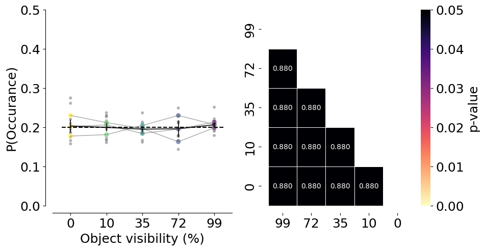
# Success rate per mouse
fig, ax = plt.subplots(1, 1, figsize=(4, 5))
plotting.plot_rate(
df=trial_df,
label_x="trial_rewarded",
per_aperture=True,
ax=ax,
cmap=plotting.colors_multi_aperture,
per_mouse=True,
)
ax.hlines(
0.5,
xmin=-0.25,
xmax=len(trial_df.aperture.unique()) - 0.75,
linestyles="dashed",
colors="k",
)
ax.set_ylim(0, 1.1)
ax.set_xlim(-0.5, 4.5)
ax.set_xlabel("Object visibility (%)")
ax.set_ylabel("Success rate / Mouse")
ax.set_xticks([0, 1, 2, 3, 4], ["0", "10", "35", "72", "99"])
ax.legend([], [], frameon=False)
sns.despine(offset=10)
print(AnovaRM(counts_for_stats, depvar="probability", subject="dataset", within=["aperture"]).fit())
plt.savefig(save_fig_path + "Supp_contrast_rewards_per_mouse.svg", transparent=True)
3.0-4.2: TtestResult(statistic=-2.393581489543188, pvalue=0.04031995582024074, df=9)
3.0-6.0: TtestResult(statistic=-4.828195259656327, pvalue=0.0009362490311677638, df=9)
3.0-8.48: TtestResult(statistic=-8.912242575011279, pvalue=9.249971086695045e-06, df=9)
3.0: mean=0.741 ± 0.019
4.2-6.0: TtestResult(statistic=-1.92096579756734, pvalue=0.08692191216160115, df=9)
4.2-8.48: TtestResult(statistic=-4.850135306839086, pvalue=0.0009081641543759242, df=9)
4.2: mean=0.825 ± 0.030
6.0-8.48: TtestResult(statistic=-1.6376979753432979, pvalue=0.13590988416235417, df=9)
6.0: mean=0.906 ± 0.021
8.48: mean=0.961 ± 0.016
12.0-3.0: TtestResult(statistic=7.563845984282052, pvalue=3.4542138680018426e-05, df=9)
12.0-4.2: TtestResult(statistic=4.649208855191627, pvalue=0.0012034624661946347, df=9)
12.0-6.0: TtestResult(statistic=1.4393108531069605, pvalue=0.1839202289289116, df=9)
12.0-8.48: TtestResult(statistic=-0.8155525627147091, pvalue=0.43580720509681725, df=9)
12.0: mean=0.944 ± 0.016
Anova
======================================
F Value Num DF Den DF Pr > F
--------------------------------------
aperture 0.2444 4.0000 36.0000 0.9112
======================================
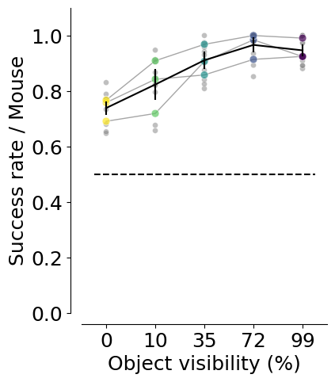
# Success rate per mouse
fig, ax = plt.subplots(1, 2, figsize=(10, 5))
plotting.plot_rate(
df=trial_df,
label_x="trial_rewarded",
per_aperture=True,
ax=ax[0],
cmap=plotting.colors_multi_aperture,
per_lab=True,
)
ax[0].hlines(
0.5,
xmin=-0.25,
xmax=len(trial_df.aperture.unique()) - 0.75,
linestyles="dashed",
colors="k",
)
ax[0].set_ylim(0, 1.1)
ax[0].set_xlim(-0.5, 4.5)
ax[0].set_xlabel("Object visibility (%)")
ax[0].set_ylabel("Success rate / Mouse")
ax[0].set_xticks([0, 1, 2, 3, 4], ["0", "10", "35", "72", "99"])
ax[0].legend([], [], frameon=False)
sns.despine(offset=10)
p_values = get_multi_p_values_global(trial_df, y_var="trial_rewarded")
plot_aperture_heatmap(p_values, ax=ax[1])
ax[1].set_xticks([4.5, 3.5, 2.5, 1.5, 0.5], ["0", "10", "35", "72", "99"])
ax[1].set_yticks([4.5, 3.5, 2.5, 1.5, 0.5], ["0", "10", "35", "72", "99"])
mean_mouse = trial_df.groupby(["dataset", "aperture"], as_index=False).mean(numeric_only=True)
print(AnovaRM(mean_mouse, depvar="trial_rewarded", subject="dataset", within=["aperture"]).fit())
plt.savefig(save_fig_path + "Supp_contrast_rewards.svg", transparent=True)
3.0-4.2: TtestResult(statistic=-3.234131923327639, pvalue=0.01025455884314167, df=9)
3.0-6.0: TtestResult(statistic=-5.383118385251004, pvalue=0.0004426822155233248, df=9)
3.0-8.48: TtestResult(statistic=-8.116380148217551, pvalue=1.9718939437404885e-05, df=9)
3.0: mean=0.741 ± 0.019
4.2-6.0: TtestResult(statistic=-2.2355372934526856, pvalue=0.0522224797428455, df=9)
4.2-8.48: TtestResult(statistic=-3.865270064925998, pvalue=0.0038162261690114427, df=9)
4.2: mean=0.825 ± 0.030
6.0-8.48: TtestResult(statistic=-4.255456977502932, pvalue=0.002125317377391665, df=9)
6.0: mean=0.906 ± 0.021
8.48: mean=0.961 ± 0.016
12.0-3.0: TtestResult(statistic=13.421219262892725, pvalue=2.9518244364314835e-07, df=9)
12.0-4.2: TtestResult(statistic=4.188771278438017, pvalue=0.0023453847116599253, df=9)
12.0-6.0: TtestResult(statistic=2.040598614017328, pvalue=0.07169567685267667, df=9)
12.0-8.48: TtestResult(statistic=-1.0546499929256126, pvalue=0.3190739239181713, df=9)
12.0: mean=0.944 ± 0.016
Anova
======================================
F Value Num DF Den DF Pr > F
--------------------------------------
aperture 25.1277 4.0000 36.0000 0.0000
======================================
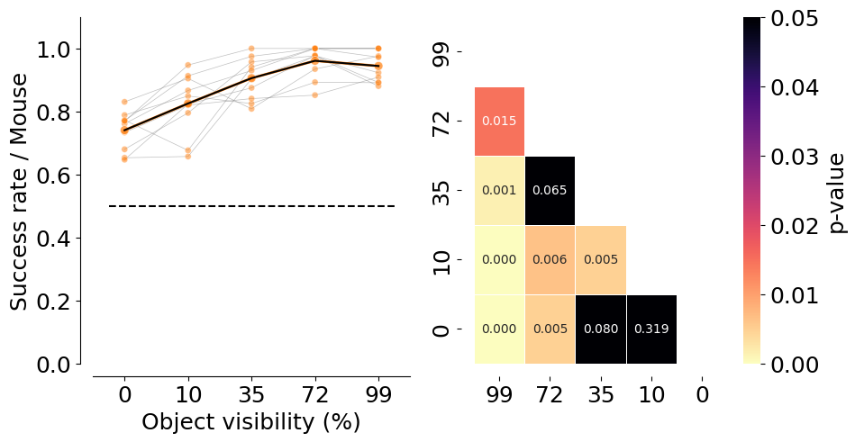
trial_df["trial_bias"] = 2 * trial_df["trial_left_choice"] - 1
# Choice bias per mouse and per lab
fig, ax = plt.subplots(1, 4, figsize=(20, 5))
plotting.plot_rate(
df=trial_df,
label_x="trial_left_choice",
plot_bias=True,
per_aperture=True,
ax=ax[0],
cmap=plotting.colors_multi_aperture,
per_mouse=True,
)
ax[0].vlines(
0,
ymin=-0.25,
ymax=len(trial_df.aperture.unique()) - 0.75,
linestyles="dashed",
colors="grey",
)
ax[0].set_ylabel("Object visibility (%)")
ax[0].set_xlabel("Choice bias index / Mouse")
ax[0].set_yticks([0, 1, 2, 3, 4], ["0", "10", "35", "72", "99"])
ax[0].legend([], [], frameon=False)
sns.despine(offset=10)
plotting.plot_rate(
df=trial_df,
label_x="trial_left_choice",
per_aperture=True,
plot_bias=True,
ax=ax[1],
cmap=plotting.colors_multi_aperture,
per_lab=True,
)
ax[1].vlines(
0,
ymin=-0.25,
ymax=len(trial_df.aperture.unique()) - 0.75,
linestyles="dashed",
colors="grey",
)
ax[1].set_ylabel("Object visibility (%)")
ax[1].set_xlabel("Choice bias index / Session")
ax[1].set_yticks([0, 1, 2, 3, 4], ["0", "10", "35", "72", "99"])
ax[1].legend([], [], frameon=False)
# One-sample t-test of bias against 0 (null) per training stage
apertures_ = []
for stage in sorted(trial_df.aperture.unique()):
vals = trial_df.loc[trial_df.aperture == stage, "trial_bias"]
t_stat, p_val = stats.ttest_1samp(vals, 0)
apertures_.append({
"aperture": stage,
"n": len(vals),
"mean_bias": vals.mean(),
"t_stat": t_stat,
"df": max(len(vals) - 1, 0),
"p_value": p_val,
})
apertures_df = pd.DataFrame(apertures_)
print("One-sample t-tests vs 0 (bias)")
print(apertures_df)
# Plot p-values only (no bar/box)
ax[2].plot(apertures_df["aperture"], apertures_df["p_value"],
marker="o", linestyle="-", color="k")
ax[2].axhline(0.05, color="grey", linestyle="--")
ax[2].set_xlabel("Training stage")
ax[2].set_ylabel("p-value (vs 0)")
# Plot p-values of the multi-comparison test
p_values = get_multi_p_values_global(trial_df, y_var="trial_bias")
plot_aperture_heatmap(p_values, ax=ax[3])
ax[3].set_xticks([4.5, 3.5, 2.5, 1.5, 0.5], ["0", "10", "35", "72", "99"])
ax[3].set_yticks([4.5, 3.5, 2.5, 1.5, 0.5], ["0", "10", "35", "72", "99"])
mean_mouse = trial_df.groupby(["dataset", "aperture"], as_index=False).mean(numeric_only=True)
print(AnovaRM(mean_mouse, depvar="trial_bias", subject="dataset", within=["aperture"]).fit())
sns.despine(offset=10)
plt.tight_layout(pad=2)
plt.savefig(save_fig_path + "Supp_contrast_choice_bias.svg", transparent=True)
3.0-4.2: TtestResult(statistic=-0.3096211581005676, pvalue=0.7638977890732921, df=9)
3.0-6.0: TtestResult(statistic=0.29635402461087895, pvalue=0.7736845197976516, df=9)
3.0-8.48: TtestResult(statistic=0.4672705396892659, pvalue=0.6514127323107162, df=9)
3.0: mean=0.118 ± 0.076
4.2-6.0: TtestResult(statistic=1.4186885408959362, pvalue=0.18967744578924367, df=9)
4.2-8.48: TtestResult(statistic=0.9773280577055755, pvalue=0.35394401899382844, df=9)
4.2: mean=0.149 ± 0.037
6.0-8.48: TtestResult(statistic=0.06095542942940637, pvalue=0.9527268563132709, df=9)
6.0: mean=0.084 ± 0.049
8.48: mean=0.079 ± 0.053
12.0-3.0: TtestResult(statistic=-2.0902928393997864, pvalue=0.06615191223045058, df=9)
12.0-4.2: TtestResult(statistic=-2.7132621916965687, pvalue=0.023869664597574187, df=9)
12.0-6.0: TtestResult(statistic=-1.9862311923302967, pvalue=0.07827032364343639, df=9)
12.0-8.48: TtestResult(statistic=-1.933169292278888, pvalue=0.08523822277235812, df=9)
12.0: mean=-0.076 ± 0.061
3.0-4.2: TtestResult(statistic=-0.3825207795474985, pvalue=0.7109519875959057, df=9)
3.0-6.0: TtestResult(statistic=0.39434554648330705, pvalue=0.702507188254865, df=9)
3.0-8.48: TtestResult(statistic=0.5738147486053571, pvalue=0.5801479909517114, df=9)
3.0: mean=0.118 ± 0.076
4.2-6.0: TtestResult(statistic=0.8861705223085874, pvalue=0.3985850440286236, df=9)
4.2-8.48: TtestResult(statistic=1.1489645267349753, pvalue=0.2801887361421152, df=9)
4.2: mean=0.149 ± 0.037
6.0-8.48: TtestResult(statistic=0.07471833483588222, pvalue=0.9420732385501621, df=9)
6.0: mean=0.084 ± 0.049
8.48: mean=0.079 ± 0.053
12.0-3.0: TtestResult(statistic=-3.32809979055779, pvalue=0.008825741222833864, df=9)
12.0-4.2: TtestResult(statistic=-4.821772660848004, pvalue=0.0009446460793201432, df=9)
12.0-6.0: TtestResult(statistic=-1.7024768880899768, pvalue=0.12287085639249272, df=9)
12.0-8.48: TtestResult(statistic=-2.3224375973529354, pvalue=0.04530464663741058, df=9)
12.0: mean=-0.076 ± 0.061
One-sample t-tests vs 0 (bias)
aperture n mean_bias t_stat df p_value
0 3.00 479 0.123173 2.713627 478 0.006895
1 4.20 455 0.147253 3.172135 454 0.001616
2 6.00 449 0.091314 1.940862 448 0.052902
3 8.48 459 0.076253 1.636645 458 0.102392
4 12.00 471 -0.053079 -1.152340 470 0.249767
Anova
======================================
F Value Num DF Den DF Pr > F
--------------------------------------
aperture 2.9408 4.0000 36.0000 0.0335
======================================
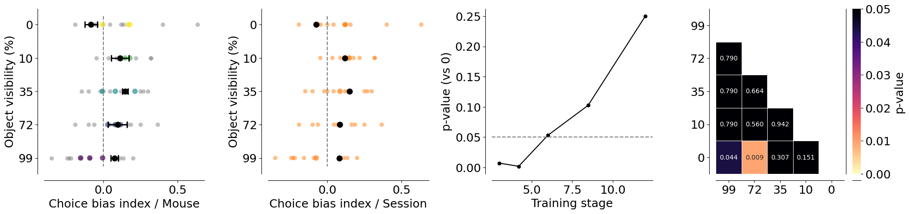
fig, ax = plt.subplots(1, 2, figsize=(10, 5))
counts = (
trial_df
.groupby(["lab_id", "dataset", "aperture"], as_index=False)
.trial_tortuosity.mean()
)
counts["count"] = counts["trial_tortuosity"]
counts = pd.DataFrame(counts.reset_index())
counts.aperture = counts.aperture.round(2).astype(str)
plotting._plot_bar_counts(
counts=counts,
label_x="aperture",
alpha=0.2,
ax=ax[0],
per_lab=True,
cmap=plotting.colors_aperture[0:2],
)
ax[0].invert_xaxis()
ax[0].set_xlim(-0.5, 4.5)
ax[0].set_xlabel("Object visibility (%)")
ax[0].set_ylabel("Trial Tortuosity / Session")
ax[0].set_xticks([0, 1, 2, 3, 4], ["0", "10", "35", "72", "99"])
ax[0].legend([], [], frameon=False)
sns.despine(offset=10)
p_values = get_multi_p_values_global(trial_df, y_var="trial_tortuosity")
plot_aperture_heatmap(p_values, ax=ax[1])
ax[1].set_xticks([4.5, 3.5, 2.5, 1.5, 0.5], ["0", "10", "35", "72", "99"])
ax[1].set_yticks([4.5, 3.5, 2.5, 1.5, 0.5], ["0", "10", "35", "72", "99"])
mean_mouse = trial_df.groupby(["dataset", "aperture"], as_index=False).mean(numeric_only=True)
print(AnovaRM(mean_mouse, depvar="trial_tortuosity", subject="dataset", within=["aperture"]).fit())
plt.savefig(save_fig_path + "Supp_contrast_tortuosity.svg", transparent=True)
Anova
======================================
F Value Num DF Den DF Pr > F
--------------------------------------
aperture 3.7683 4.0000 36.0000 0.0116
======================================
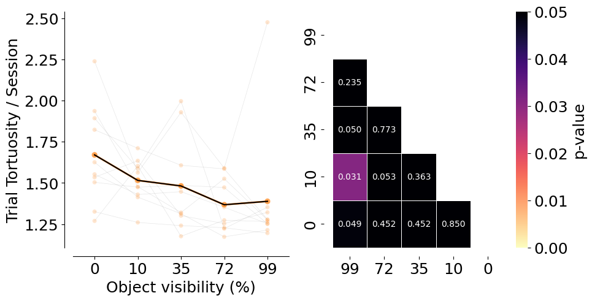
Trajectory analysis#
xy_df = []
for m in sessions_list:
xy_df.append(pd.DataFrame((MeanXYTrajectory() & f'dataset="{m}"').fetch(as_dict=True)[0]))
xy_df = pd.concat(xy_df)
xy_df["mouse_name"] = xy_df.dataset.str.split("_").str [0]
# Mean and error by mouse
mean_mouse = analysis.mean_xy_trajectory(xy_df,
index_columns=[
"mouse_name", "aperture", "trial_left_choice", "trial_length"
])
for m in mean_mouse.mouse_name.unique():
plotting.plot_mean_xy_trajectory(mean_mouse[mean_mouse.mouse_name == m], cmap=plt.cm.viridis_r, color_by="aperture", style_by="choice")
plt.title(m)
plt.savefig(save_fig_path + f"Supp_contrast_trajectories_time_{m}.svg", transparent=True)
plt.savefig(save_fig_path + f"Supp_contrast_trajectories_time_{m}.png", transparent=True, dpi=300)
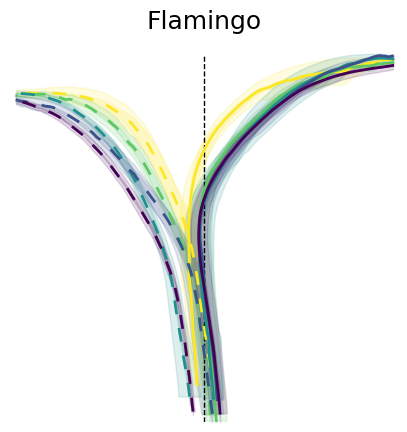
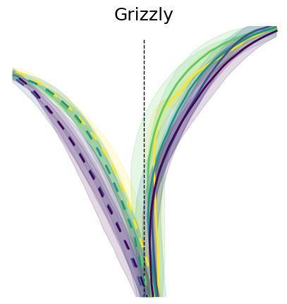
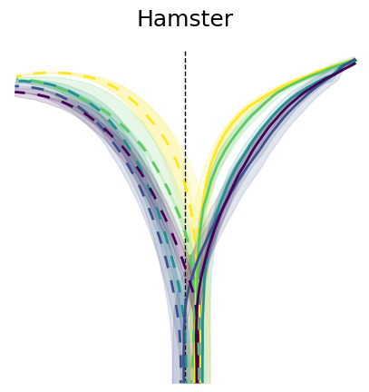
# Mean and error by aperture and choice
mean_group = analysis.mean_xy_trajectory(mean_mouse,
index_columns=[
"aperture", "trial_left_choice", "trial_length"
])
# Plot the mean trajectories from 0, 23 cm in y axis, -18, 18 cm in x axis, colored by choice and styled by aperture
plotting.plot_mean_xy_trajectory(mean_group, cmap=plt.cm.viridis_r, color_by="aperture", style_by="choice")
plt.savefig(save_fig_path + "Supp_contrast_trajectories_time.svg", transparent=True)
plt.savefig(save_fig_path + "Supp_contrast_trajectories_time.png", transparent=True, dpi=300)
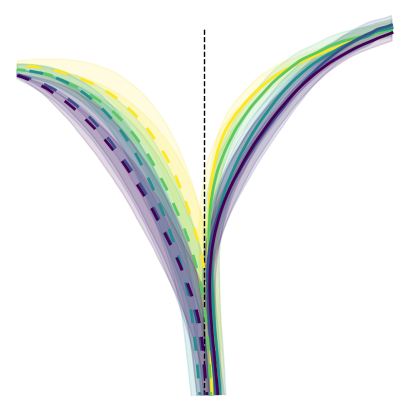
Stats on trajectories#
y_binned_df = []
for m in sessions_list:
try:
y_binned_df.append(pd.DataFrame((InterpolatedTrials() & f'dataset="{m}"').fetch("dataset", "aperture", "trial", "trial_left_choice", "x", "y", "flip_one_side", "trial_rewarded", "velocity", "trial_length", as_dict=True)[0]))
except Exception as err:
print(err)
y_binned_df = pd.concat(y_binned_df)
aperture_to_occlusion = {
12.0: 99,
8.48: 72,
6.0: 35,
4.2: 10,
3.0: 0
}
y_binned_df["aperture"] = y_binned_df["aperture"].map(aperture_to_occlusion)
y_binned_df["mouse_name"] = y_binned_df.dataset.str.split("_").str [0]
y_binned_df["x_flipped"] = y_binned_df.x * y_binned_df.flip_one_side
data = utils.create_bins(y_binned_df)
y_binned_df_mean = analysis.mean_xy_trajectory(data, index_columns= ["dataset", "mouse_name", "aperture", "bin_centers"], values=["x_flipped", "y"])
# NOTE(celia): Data unbalanced across bins, so only include bins so that balanced
stats_binned = y_binned_df_mean[(y_binned_df_mean.bin_centers >= 0) & (y_binned_df_mean.bin_centers <= 19)]
sns.lineplot(data=stats_binned, x="bin_centers", y="x_flipped", hue="aperture", palette= "viridis_r",errorbar="se")
plt.xlabel("Y bin")
plt.ylabel("X position")
sns.despine(offset=10)
plt.savefig(save_fig_path + "Supp_contrast_mean_xy_trajectory.svg")
print(
AnovaRM(
data=stats_binned,
depvar="x_flipped",
subject="dataset",
within=["aperture", "bin_centers"],
).fit()
)
Anova
=====================================================
F Value Num DF Den DF Pr > F
-----------------------------------------------------
aperture 4.2511 4.0000 36.0000 0.0064
bin_centers 135.8912 24.0000 216.0000 0.0000
aperture:bin_centers 1.0311 96.0000 864.0000 0.4042
=====================================================
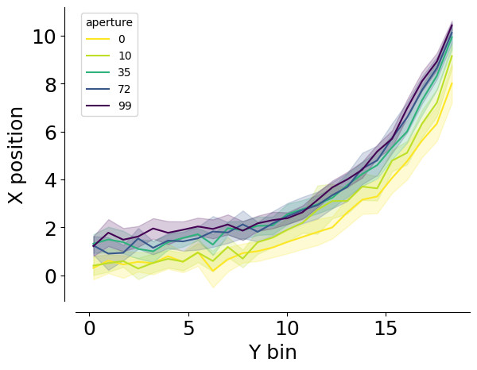
p_value_df = get_multi_p_values_binned(stats_binned, x_var="bin_centers", y_var="x_flipped")
sns.lineplot(data = p_value_df, x="bin", y="p_value_corr", hue=zip(p_value_df.comp1, p_value_df.comp2))
plt.ylabel("FDR p-value")
plt.xlabel("y bin")
plt.yscale("log")
plt.axhline(0.05, linestyle="dashed", color="red", alpha=0.5)
sns.despine(offset=10)
plt.savefig(save_fig_path + "Supp_contrast_pos_pvalue.svg", transparent=True)
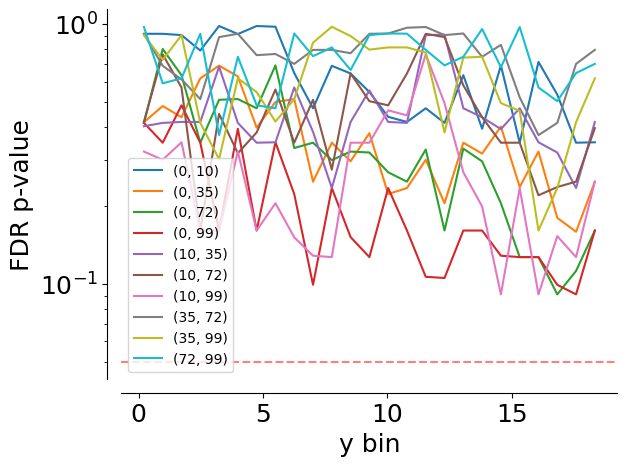
p_value_df.pivot(index = "bin", columns=["comp1", "comp2"], values=["p_value_corr"])
| p_value_corr | ||||||||||
|---|---|---|---|---|---|---|---|---|---|---|
| comp1 | 0 | 10 | 35 | 72 | ||||||
| comp2 | 10 | 35 | 72 | 99 | 35 | 72 | 99 | 72 | 99 | 99 |
| bin | ||||||||||
| 0.2145 | 0.917696 | 0.419178 | 0.416565 | 0.416565 | 0.404404 | 0.420109 | 0.323070 | 0.915776 | 0.907264 | 0.974521 |
| 0.9695 | 0.917696 | 0.483725 | 0.802045 | 0.349472 | 0.416565 | 0.764359 | 0.300375 | 0.690990 | 0.728364 | 0.591719 |
| 1.7245 | 0.907264 | 0.437934 | 0.635808 | 0.486746 | 0.420109 | 0.570276 | 0.350772 | 0.612625 | 0.907264 | 0.618354 |
| 2.4795 | 0.791274 | 0.618244 | 0.349472 | 0.349472 | 0.420109 | 0.160415 | 0.160415 | 0.514439 | 0.416565 | 0.917696 |
| 3.2345 | 0.983142 | 0.692084 | 0.511305 | 0.160415 | 0.685116 | 0.451067 | 0.160415 | 0.891276 | 0.302135 | 0.373887 |
| 3.9895 | 0.915776 | 0.629107 | 0.514542 | 0.395386 | 0.416565 | 0.318431 | 0.323070 | 0.917696 | 0.618354 | 0.748439 |
| 4.7445 | 0.983142 | 0.399389 | 0.474207 | 0.160415 | 0.349472 | 0.382723 | 0.160415 | 0.759430 | 0.547669 | 0.486746 |
| 5.5000 | 0.976991 | 0.501473 | 0.693569 | 0.350772 | 0.350772 | 0.560047 | 0.204362 | 0.767311 | 0.421422 | 0.474207 |
| 6.2555 | 0.647910 | 0.514439 | 0.333347 | 0.221676 | 0.570276 | 0.349472 | 0.150968 | 0.702940 | 0.514439 | 0.920252 |
| 7.0105 | 0.474207 | 0.247402 | 0.349472 | 0.099169 | 0.384640 | 0.511305 | 0.128331 | 0.795770 | 0.848518 | 0.752539 |
| 7.7655 | 0.690990 | 0.349472 | 0.299595 | 0.233881 | 0.233881 | 0.275195 | 0.126750 | 0.795770 | 0.976991 | 0.813409 |
| 8.5205 | 0.645611 | 0.296503 | 0.323070 | 0.151363 | 0.420111 | 0.645611 | 0.349472 | 0.772676 | 0.899438 | 0.666054 |
| 9.2755 | 0.547669 | 0.380183 | 0.320397 | 0.126750 | 0.555459 | 0.504908 | 0.349472 | 0.917696 | 0.797478 | 0.907264 |
| 10.0305 | 0.439600 | 0.221676 | 0.268865 | 0.233881 | 0.420109 | 0.486820 | 0.465553 | 0.920252 | 0.813409 | 0.920252 |
| 10.7855 | 0.420111 | 0.233881 | 0.247402 | 0.160415 | 0.416565 | 0.645611 | 0.445285 | 0.968612 | 0.813409 | 0.918743 |
| 11.5405 | 0.474207 | 0.300375 | 0.329128 | 0.106434 | 0.907264 | 0.917696 | 0.764701 | 0.974521 | 0.776563 | 0.795770 |
| 12.2955 | 0.416565 | 0.204362 | 0.160415 | 0.105324 | 0.910767 | 0.891276 | 0.496433 | 0.907264 | 0.382723 | 0.693569 |
| 13.0510 | 0.635808 | 0.349472 | 0.331583 | 0.160415 | 0.474207 | 0.581033 | 0.268865 | 0.920252 | 0.743129 | 0.748439 |
| 13.8065 | 0.395386 | 0.317187 | 0.296236 | 0.160415 | 0.437934 | 0.437934 | 0.198633 | 0.748439 | 0.748439 | 0.957600 |
| 14.5615 | 0.692942 | 0.403337 | 0.204362 | 0.128331 | 0.394204 | 0.349472 | 0.091081 | 0.831806 | 0.496433 | 0.682598 |
| 15.3165 | 0.349472 | 0.235955 | 0.126750 | 0.126750 | 0.474207 | 0.349472 | 0.233881 | 0.522613 | 0.463347 | 0.974521 |
| 16.0715 | 0.715008 | 0.323070 | 0.126750 | 0.126750 | 0.350772 | 0.219239 | 0.091081 | 0.373887 | 0.160415 | 0.570276 |
| 16.8265 | 0.535408 | 0.179538 | 0.091081 | 0.099169 | 0.320397 | 0.235955 | 0.152640 | 0.416565 | 0.233881 | 0.504908 |
| 17.5815 | 0.349472 | 0.158629 | 0.112135 | 0.091081 | 0.233881 | 0.247402 | 0.126750 | 0.702940 | 0.419178 | 0.647910 |
| 18.3365 | 0.350772 | 0.247402 | 0.160415 | 0.160415 | 0.420109 | 0.397676 | 0.247402 | 0.795770 | 0.618354 | 0.702940 |
Velocity analysis#
velocity_df = []
for m in sessions_list:
#print(m)
velocity_df.append(pd.DataFrame((MeanVelocities() & f'dataset="{m}"').fetch(as_dict=True)[0]))
velocity_df = pd.concat(velocity_df)
mean_mouse = velocity_df.groupby(["dataset", "aperture", "trial_length"],as_index=False).mean()
aperture_to_occlusion = {
12.0: 99,
8.48: 72,
6.0: 35,
4.2: 10,
3.0: 0
}
# Map the values
mean_mouse['aperture'] = mean_mouse['aperture'].map(aperture_to_occlusion)
fig, ax = plt.subplots(1, 1, figsize=(5, 5))
sns.lineplot(
data=mean_mouse,
x="trial_length",
y="velocity",
palette=plotting.colors_multi_aperture,
hue="aperture",
errorbar="se",
ax=ax,
)
sns.despine(offset=10)
ax.set_xlabel("Trial progression")
ax.set_ylabel("Combined velocity (cm/s)")
plt.savefig(save_fig_path + "Supp_contrast_velocity.svg", transparent=True)
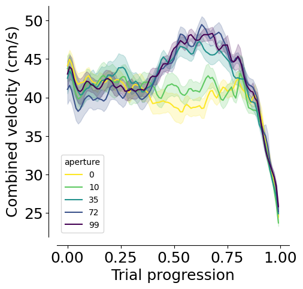
print(
AnovaRM(
data=mean_mouse,
depvar="velocity",
subject="dataset",
within=["aperture", "trial_length"],
).fit()
)
Anova
=======================================================
F Value Num DF Den DF Pr > F
-------------------------------------------------------
aperture 8.0183 4.0000 36.0000 0.0001
trial_length 36.1984 99.0000 891.0000 0.0000
aperture:trial_length 4.9314 396.0000 3564.0000 0.0000
=======================================================
p_value_df = get_multi_p_values_binned(mean_mouse, x_var="trial_length", y_var="velocity")
p_value_df
| bin | comp1 | comp2 | p_value | p_value_corr | |
|---|---|---|---|---|---|
| 0 | 0.00 | 0 | 10 | 0.754650 | 0.902255 |
| 0 | 0.00 | 0 | 35 | 0.330019 | 0.603528 |
| 0 | 0.00 | 0 | 72 | 0.079434 | 0.248753 |
| 0 | 0.00 | 0 | 99 | 0.453723 | 0.713401 |
| 0 | 0.00 | 10 | 35 | 0.336848 | 0.611340 |
| ... | ... | ... | ... | ... | ... |
| 0 | 0.99 | 10 | 72 | 0.016952 | 0.086052 |
| 0 | 0.99 | 10 | 99 | 0.002576 | 0.023204 |
| 0 | 0.99 | 35 | 72 | 0.587979 | 0.811488 |
| 0 | 0.99 | 35 | 99 | 0.061206 | 0.214005 |
| 0 | 0.99 | 72 | 99 | 0.361922 | 0.629781 |
1000 rows × 5 columns
sns.lineplot(data = p_value_df, x="bin", y="p_value_corr", hue=zip(p_value_df.comp1, p_value_df.comp2))
plt.ylabel("FDR p-value")
plt.xlabel("Trial progression")
plt.axhline(0.05, linestyle="dashed", color="red", alpha=0.5)
plt.yscale("log")
sns.despine(offset=10)
plt.savefig(save_fig_path + "Supp_contrast_velocity_pvalue.svg", transparent=True)
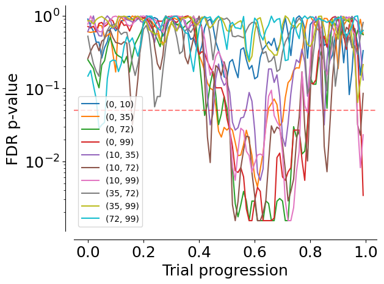
Prediction model#
model_key = {"label_set_id": 8, "params_id": 1}
task_type_key = {"set_name": "contrast_black_target",
"stage_name": "multi_occlusion",}
# Coefficients for dual occluder task
coef = (PredictionModel() & task_type_key & model_key).fetch1("coefficients")
# Logits of the regression
model_labels, clean_labels = (LabelSet.Member * Label & model_key).fetch("label_key", "clean_name")
fig, ax = plt.subplots(1, 1, figsize=(2, 5))
ax.barh(
model_labels,
np.mean(coef[:, 1:], axis=0),
yerr=stats.sem(coef[:, 1:], axis=0),
color="#7C7C7C",
)
sns.despine(offset=10, ax=ax)
ax.set_yticks(np.arange(len(model_labels)))
ax.set_yticklabels(clean_labels, rotation=0, ha="right", fontsize=15)
ax.set_xlabel("Logits")
ax.set_ylabel("Features")
plt.savefig(
save_fig_path + "Supp_contrast_model_logits.svg", transparent=False
)
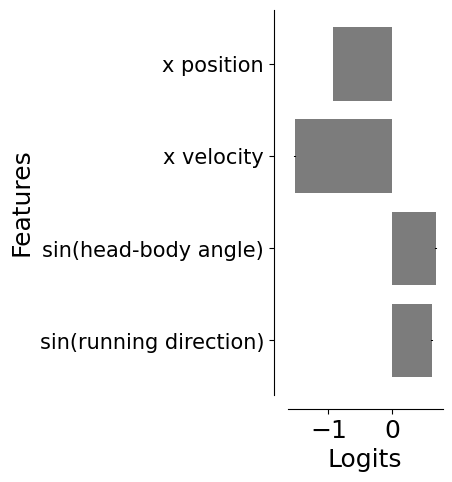
prediction_df = pd.DataFrame((PredictionModel().SessionPrediction() & model_key & task_type_key).fetch(
"dataset", "trial", "proba_left", "accuracy", "trial_length", as_dict=True)).explode(["trial", "proba_left", "accuracy", "trial_length"])
df_model = prediction_df.merge(
interpolated_df[["dataset", "trial_length", "trial", "aperture", "trial_left_choice", "x", "y"]], on=["dataset", "trial", "trial_length"]
)
df_model["accuracy"] = df_model["accuracy"].astype(float)
df_model["proba_left"] = df_model["proba_left"].astype(float)
df_model_mean = df_model.groupby(["dataset", "aperture", "trial_left_choice", "trial_length"], as_index=False).mean()
fig, ax = plt.subplots(1, 1, figsize=(5, 5))
dash_styles = {
df_model_mean.aperture.unique()[0]: "", # Solid
df_model_mean.aperture.unique()[1]: (5, 5) # Dashed
}
sns.lineplot(
data=df_model_mean,
x="trial_length",
y="proba_left",
hue="aperture",
style="trial_left_choice",
palette=plotting.colors_multi_aperture,
sort=False,
alpha=1,
ax=ax,
)
ax.hlines(0.5, xmin=0, xmax=1, colors="black", linestyles="dashed")
ax.hlines(0.8, xmin=0, xmax=1, colors="gray", linestyles="dotted")
ax.hlines(0.2, xmin=0, xmax=1, colors="gray", linestyles="dotted")
ax.set_ylabel("Proba(Left)")
ax.set_xlabel("Trial progression")
sns.despine(offset=10)
plt.legend([], [], frameon=False)
plt.savefig(
save_fig_path + "Supp_contrast_dynamic_decision_variable_mean.svg", transparent=True
)
plt.savefig(
save_fig_path + "Supp_contrast_dynamic_decision_variable_mean.png", transparent=True, dpi=300
)
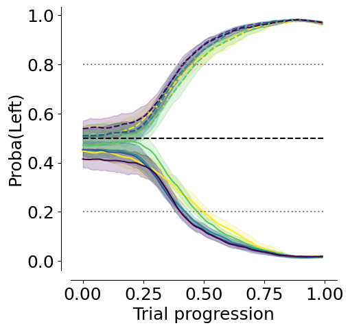
# Accuracy
df_model_mean = df_model.groupby(["dataset", "aperture", "trial_length"], as_index=False).mean()
fig, ax = plt.subplots(1, 1, figsize=(7, 5))
sns.lineplot(
ax=ax,
data=df_model_mean,
y="accuracy",
x="trial_length",
hue="aperture",
palette=plotting.colors_multi_aperture,
errorbar="se",
)
sns.despine(offset=10)
ax.set_xlabel("Trial progression")
ax.set_ylabel("Accuracy")
ax.hlines(0.5, 0, 1, color="black", linestyle="--")
plt.legend([], [], frameon=False)
plt.savefig(
save_fig_path + "Supp_contrast_model_accuracy.svg", transparent=False
)
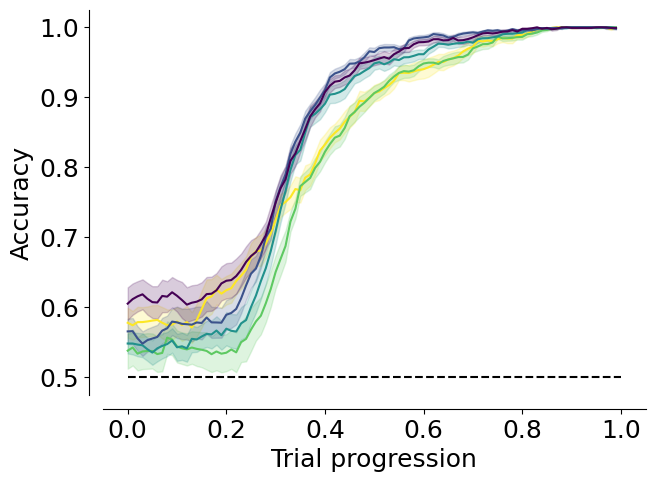
df_model["trial_length_bin"] = pd.cut(
df_model["trial_length"], bins=50
)
df_anova = df_model.groupby(
["dataset", "aperture", "trial_length_bin"], as_index=False
).mean(numeric_only=True)
print(
AnovaRM(
data=df_anova,
depvar="accuracy",
subject="dataset",
within=["aperture", "trial_length_bin"],
).fit()
)
Anova
============================================================
F Value Num DF Den DF Pr > F
------------------------------------------------------------
aperture 11.4916 4.0000 96.0000 0.0000
trial_length_bin 474.8240 49.0000 1176.0000 0.0000
aperture:trial_length_bin 4.3735 196.0000 4704.0000 0.0000
============================================================
Get the decision points#
decision_points = pd.DataFrame((DecisionPoints() & task_type_key & model_key & "threshold_uncertainty = 0.2").fetch(as_dict=True))
decision_points = decision_points.explode(["trial", "aperture", "trial_length", "trial_left_choice", "proba_left", "x", "y", "trial_rewarded"])
decision_points["mouse_name"] = decision_points.dataset.str.split("_").str[0]
decision_points["y"] = decision_points["y"].astype(float)
Get distance to screen at decision point#
fig, ax = plt.subplots(1, 1, figsize=(4, 5))
_ = plotting.pairplot_average_decision_point(
decision_points,
label_parameter="y",
ax=ax,
cmap=plotting.colors_multi_aperture,
per_mouse=True,
)
ax.set_xlabel("Objects visibility (%)")
ax.set_ylim(9, 21)
ax.set_xlim(-0.5, 4.5)
ax.set_xticks([0, 1, 2, 3, 4], ["100", "90", "65", "28", "1"])
plt.legend([], [], frameon=False)
sns.despine(offset=10)
plt.savefig(
save_fig_path + "Supp_contrast_decision_points_distance.svg",
transparent=True,
)
3.0-4.2: TtestResult(statistic=0.49739267320565256, pvalue=0.6234385950886467, df=24)
mean difference: -0.4588393517271001
3.0-6.0: TtestResult(statistic=1.693880063404927, pvalue=0.10322884643216759, df=24)
mean difference: -1.4844673241082784
3.0-8.48: TtestResult(statistic=3.1792023984838473, pvalue=0.004038831906936139, df=24)
mean difference: -2.471162040680559
mean: 13.497117945523021 +/- 0.5902315830199871
4.2-6.0: TtestResult(statistic=1.4004289297852808, pvalue=0.1741812780717876, df=24)
mean difference: -1.0256279723811783
4.2-8.48: TtestResult(statistic=2.7248202118290044, pvalue=0.011813735411151478, df=24)
mean difference: -2.012322688953459
mean: 13.038278593795921 +/- 0.5588690162720868
6.0-8.48: TtestResult(statistic=1.5436863271887404, pvalue=0.135748808870696, df=24)
mean difference: -0.9866947165722806
mean: 12.012650621414743 +/- 0.49183009302876524
mean: 11.025955904842462 +/- 0.4311999013527618
12.0-3.0: TtestResult(statistic=-3.942764100540485, pvalue=0.0006088275673617407, df=24)
mean difference: 3.0493133709812312
12.0-4.2: TtestResult(statistic=-3.115811254734461, pvalue=0.004705440469699779, df=24)
mean difference: 2.590474019254131
12.0-6.0: TtestResult(statistic=-2.7638777570771382, pvalue=0.010796122359146947, df=24)
mean difference: 1.5648460468729528
12.0-8.48: TtestResult(statistic=-0.9277638576401966, pvalue=0.36276719907384913, df=24)
mean difference: 0.5781513303006722
mean: 10.44780457454179 +/- 0.4628144770914225
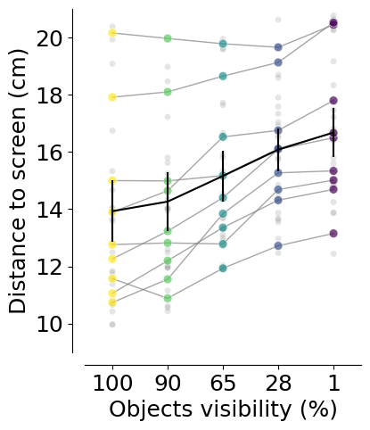